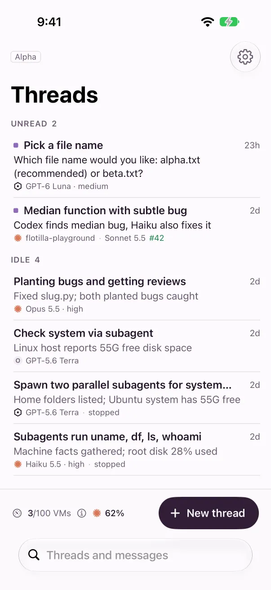
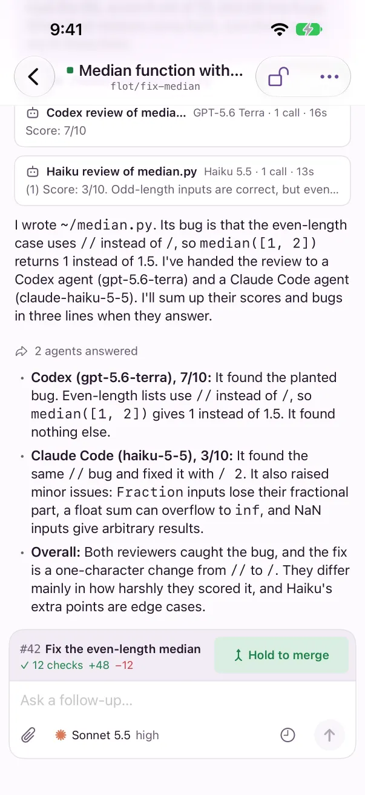
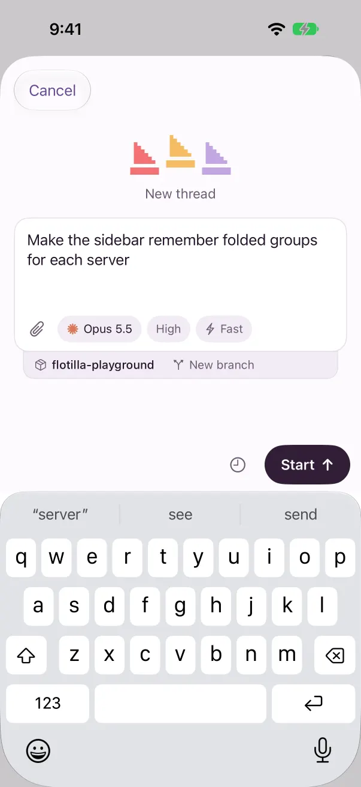
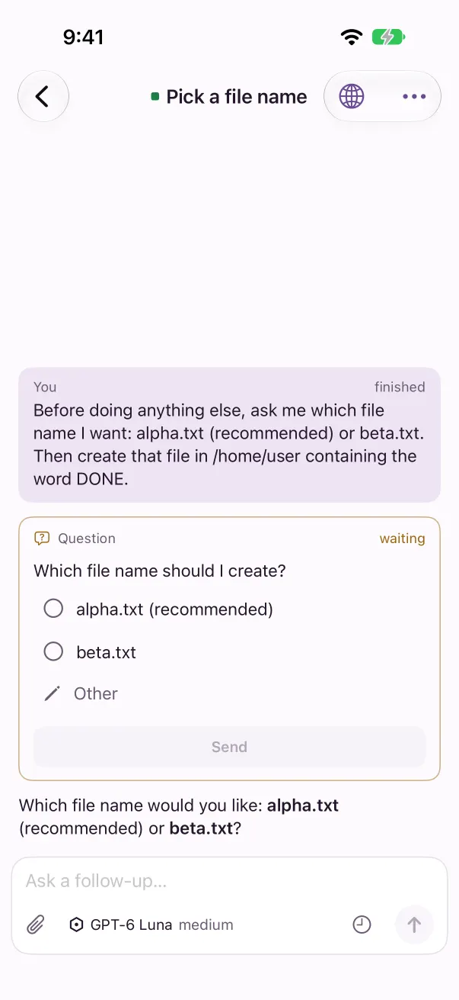
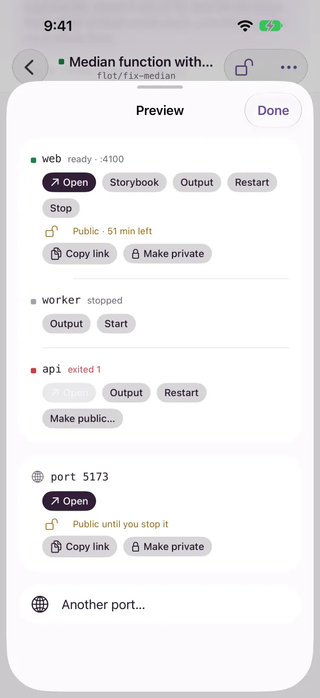

The iPhone app
The iPhone app shows the same threads as your Mac, live. Start a thread with a photo attached, answer an agent's question, open a preview, and hold to merge with your thumb.
ios folder of the repo with Xcode; its README has the steps.


Pair with your server
The iPhone app connects to a Flotilla server: one you run on a machine that stays on, or your Mac while Flotilla is open there. Your phone needs to reach it, for example over Tailscale.
- On the server, run
flotilla pair, or on a paired Mac open Settings → Devices → Add device. - Open the app. Connect to a server shows the camera: point it at the QR code. The form fills in.
- Check the Device name; it's how Settings on your other devices lists this phone.
- Tap Connect.
No camera, or the code is on another screen? Tap Use a photo of the code, or fill in Server and Code yourself. Pasting a whole pairing link into Server fills in both. Opening a pairing link on the phone fills in the form too; you still tap Connect.
The phone pairs with one server at a time. Pair with a different server in Settings replaces the first, which forgets the phone.
Threads
Threads groups threads under Unread, Working and Idle, in that order, with Archived folded at the bottom. Each row shows the title, a summary of the latest reply, the agent and model or the project, the pull request's number, and the VM's state, such as stopped or 2d left.
- Swipe left to Archive or Unarchive; swipe right to mark it read or unread. Undo shows for 5 seconds after an archive.
- Touch and hold a row for Rename…, Open the pull request and Delete…, as well as read and archive.
- Search finds threads by title, pull request, branch or project as you type, then In messages, what was said in them. Tap a message to open its thread at that message.
- The bar at the bottom shows boat.dev's VM count and the agents' weekly use; tap either for Usage. New thread is beside them.
A thread
Replies, tool calls and the cards of agents the thread handed work to stream in live. Tap a tool call to see its output, and touch and hold a message to copy it. Jump to latest appears when you scroll up.
- The message box says Ask a follow-up…, or Steer… while a turn runs. The send button follows the same rules as on the Mac: Send, Steer, or Resume and send when the VM is stopped. Stop the turn interrupts it.
- The paperclip attaches photos or files: up to 12, each up to 25 MB, 64 MB in all.
- The model, effort and context ring sit under the message box; tap the ring for the context window.
- The clock is Send later. See Scheduled prompts.
- ⋯ has the thread's menu, and the globe opens Preview.
Questions and pull requests
An agent's question shows as a card: pick an option or tap Other, then Send. See Questions from agents.
A thread's pull request shows above the message box with its checks. Fix, Resolve and Address review write a prompt for you to check and send. Hold to merge fills under your thumb and merges when full. Ready for review is on the desktop app only.
Preview
The globe in a thread's toolbar opens Preview. With no services, it asks for a port and opens it. With services, it lists each with Open, Output, Restart or Start, Stop and Make public…, and has Another port…. Pages open in Safari inside the app. Public links work as on the Mac; see Share a public link.


New thread
Tap New thread, type what the agent should do, and tap Start.
- The model button lists every model by agent. Tap Select to pick several and start the prompt on each.
- Effort and Fast sit beside it, for models that have them.
- Pick a project, or No project, and a branch: New branch, or an existing branch or pull request. Type
#12or paste a link to find one. - The clock sends it later, as a new thread each run.
Notifications
The app asks to send notifications the first time it connects. With notifications on, your phone hears when:
- a turn finishes;
- an agent asks you a question;
- the agents a thread handed work to answer;
- a thread couldn't start;
- a pull request merges;
- a scheduled prompt didn't run;
- a project's setup fails.
Tap one to open its thread. While the app is open, it doesn't notify you about the thread you're reading.
How they reach your phone
Only Flotilla's makers can send notifications to the Flotilla app, so a server without their push key sends them through Flotilla's push relay, push.useflotilla.com, which runs on Cloudflare. There's nothing to sign up for: when your server says it uses the relay, your phone registers with it.
- The relay can't read your notifications. Your phone makes a key that only it and your server have. The server encrypts each notification with it, and the phone opens it. The relay only passes on a sealed note.
- What the relay keeps: your phone's notification token, a random id with a hashed secret, and when it was registered and last used.
- It deletes them when you unpair, when Apple reports the app gone, or after 90 days unused (Cloudflare can restore deleted data for 30 days).
To turn the relay off, run this on the server. Your phone then gets no notifications, and leaves the relay:
flotilla setup --no-push-relay
flotilla service restartIf you build the app yourself under your own Apple developer team, give your server that team's push key instead, and it sends to Apple directly without the relay:
flotilla setup --apns-key AuthKey_<KEY ID>.p8 --apns-team-id <TEAM ID>
flotilla service restartThe Push check in Server setup says which it is: through the relay, your own key, or off. See also the privacy policy.
Settings
The gear on Threads opens Settings:
- Server: the server you're paired with, Pair with a different server, and Forget.
- Server setup: the server's checks, each with the commands that fix it, and Check again.
- Archiving: archive a thread when its pull request merges, and archive threads idle for a number of days. These are the server's settings, shared with your other devices.
- Devices: every paired device, with Rename… and Revoke…; rename this phone here. Add device shows a QR code, the code, and Copy link and Share.
- Appearance: Phone (follow the phone), Day or Night.
Keep running, adding projects, and the other settings are in the desktop app.